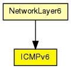
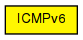

ICMPv6 implementation.
To send ICMPv6 Echo Request, send any message to port pingIn with IPv6ControlInfo attached. The message will be used as ping payload (encapsulated into an ICMPv6Message). When ICMPv6 Echo Reply is received, the payload message will be sent to pingOut.
See also: IPv6, RoutingTable6, IPv6NeighbourDiscovery
The following diagram shows usage relationships between types. Unresolved types are missing from the diagram.
The following diagram shows inheritance relationships for this type. Unresolved types are missing from the diagram.
| Name | Type | Description |
|---|---|---|
| NetworkLayer6 | compound module |
Represents an IPv6 network layer (L3). |
| Name | Value | Description |
|---|---|---|
| display | i=block/control |
| Name | Direction | Size | Description |
|---|---|---|---|
| ipv6In | input | ||
| ipv6Out | output | ||
| pingIn | input |
ping requests from app |
|
| pingOut | output | ||
| errorOut | output |
for errors |
// // ICMPv6 implementation. // // To send ICMPv6 Echo Request, send any message to port pingIn with IPv6ControlInfo // attached. The message will be used as ping payload (encapsulated into an ICMPv6Message). // When ICMPv6 Echo Reply is received, the payload message will be sent to pingOut. // // @see IPv6, RoutingTable6, IPv6NeighbourDiscovery //#FIXME gate descriptions needed... // simple ICMPv6 { parameters: @display("i=block/control"); gates: input ipv6In; output ipv6Out; input pingIn; // ping requests from app output pingOut; output errorOut; // for errors }